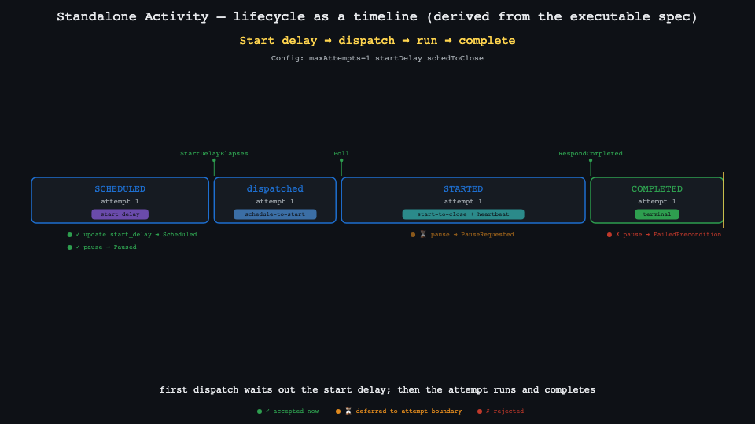
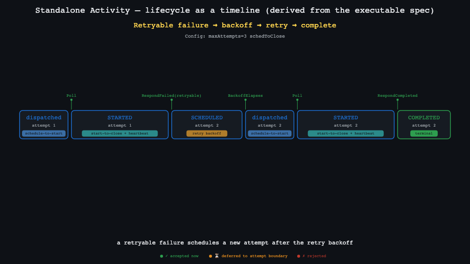
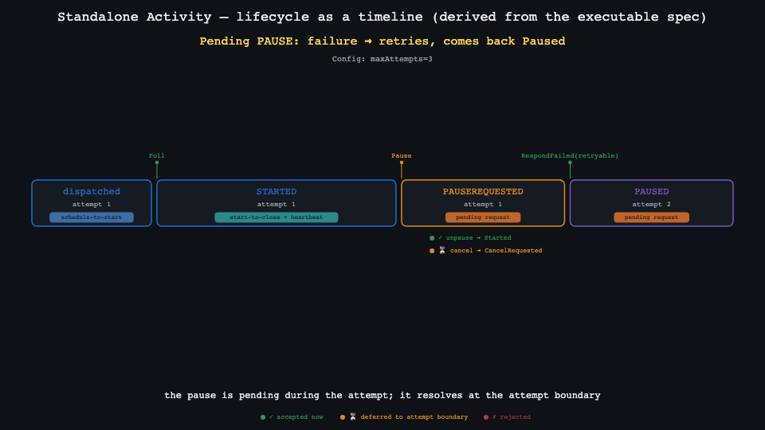
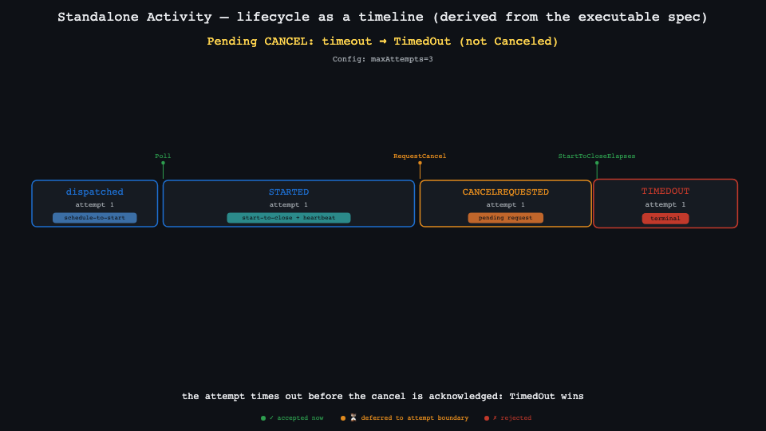
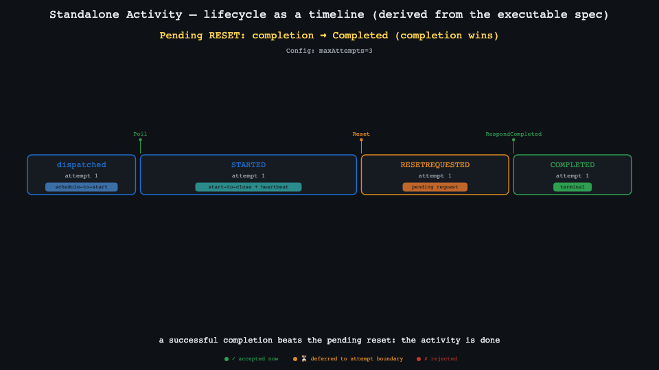

Each trace sweeps left→right through its phases as timer-window bands; event markers
sit on phase boundaries; probe markers below show which operator actions the spec would accept /
defer / reject at that phase. All derived from saaspec.Model; the same reusable
animateTrace primitive renders every trace. Key frames below (the scene renders to
video via canvas-commons).




